#Load packages
library(readxl)
library(dplyr)
library(knitr)
library(formattable)
library(lubridate)
library(tidyr)Here we focus on showing how to conduct SVD and PCA decompositions
based on the cumulative weekly all cause mortality in \(52\) states and territories in the US. For
this we need to upload the processed data available in file
US_mortality.Rdata
library(refund)
data("COVID19")
CV19 <- COVID19
names(CV19)
## [1] "US_weekly_mort" "US_weekly_mort_dates"
## [3] "US_weekly_mort_CV19" "US_weekly_mort_CV19_dates"
## [5] "US_weekly_excess_mort_2020" "US_weekly_excess_mort_2020_dates"
## [7] "US_states_names" "US_states_population"
## [9] "States_excess_mortality" "States_excess_mortality_per_million"
## [11] "States_CV19_mortality" "States_CV19_mortality_per_million"
Wd <- CV19$States_excess_mortality_per_million
current_date <- CV19$US_weekly_excess_mort_2020_dates
new_states <- CV19$US_states_namesThis is used to illustrate the singular value decomposition (SVD). SVD is applied to all-cause cumulative excess mortality data as a function of the week of 2020. Each row in the data matrix corresponds to a state or territory (District of Columbia and Puerto Rico). Every column contains the cumulative weekly number of all-cause excess deaths per one million residents since the beginning of 2020. So, the data matrix is \(52\times 52\) dimensional because there are \(50\) states and \(2\) teritories (Puerto Rico and District of Columbia) and \(52\) weeks. We start by downloading the data.
#Obtain the cumulative excess mortality per million in every stat and territory
Wr <- Wd
for(i in 1:dim(Wd)[1]){
Wr[i,] <- cumsum(Wd[i,])
}Calculate the mean and the centered data matrix \(W\).
#Column mean
mW <- colMeans(Wr)
#Construct a matrix of same dimension as Wr with the mean of Wr on each row
mW_mat <- matrix(rep(mW, each = nrow(Wr)), ncol = ncol(Wr))
#Construct the de-meaned data. The columns of W have mean zero
W <- Wr - mW_matWe start by illustrating the data for each state and territory (gray solid lines) and the mean (dark red solid lines).
for(i in 1:length(new_states)){
ylabel <- paste("US states cumulative excess deaths/million")
xlabel <- paste("Weeks starting January 2020")
#Plot only for first state. For others add lines
if(i == 1){
par(bg = "white")
#Here plot the date versus cumulative excess mortality (hence the cumsum)
plot(current_date, Wr[i,], type = "l", lwd = 1.5,
col = rgb(0, 0, 0, alpha = 0.1), cex = 1, xlab = xlabel,
ylab = ylabel, ylim = c(-50, 2500), bty = "n")
}else{
lines(current_date, Wr[i,], lwd = 1, col = rgb(0, 0, 0, alpha = 0.1))
}
}
lines(current_date, mW, lwd = 2.5, col = "darkred")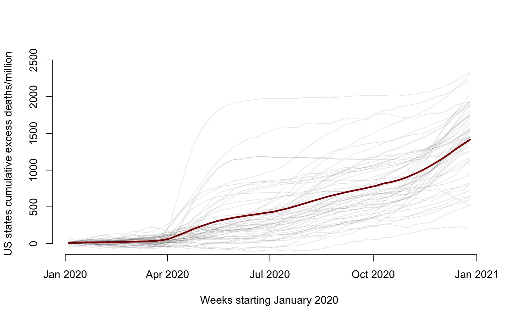
We now show the effect of the subtracting the mean from the original data. We also emphasize a few states: New Jersey (green), Louisiana (red), California (plum), Maryland (blue), and Texas (salmon).
for(i in 1:length(new_states)){
ylabel=paste("US states centered cumulative excess deaths/million")
xlabel=paste("Weeks starting January 2020")
#Plot only for first state. For others add lines
if(i==1){
par(bg = "white")
#Here plot the date versus cumulative excess mortality (hence the cumsum)
plot(current_date, W[i,], type = "l", lwd = 1.5,
col = rgb(0, 0, 0, alpha = 0.1), cex = 1, xlab = xlabel,
ylab = ylabel, ylim = c(-1500, 1500), bty = "n")
}else{
lines(current_date, W[i,], lwd = 1, col = rgb(0, 0, 0, alpha = 0.1))
}
}
#Emphasize 5 states
emphasize <- c("New Jersey", "Louisiana", "California", "Maryland", "Texas")
col_emph <- c("darkseagreen3", "red", "plum3", "deepskyblue4", "salmon")
emph_state_ind <- match(emphasize, new_states)
for(i in 1:length(emphasize)){
lines(current_date, W[emph_state_ind[i],], lwd = 2.5, col = col_emph[i])
}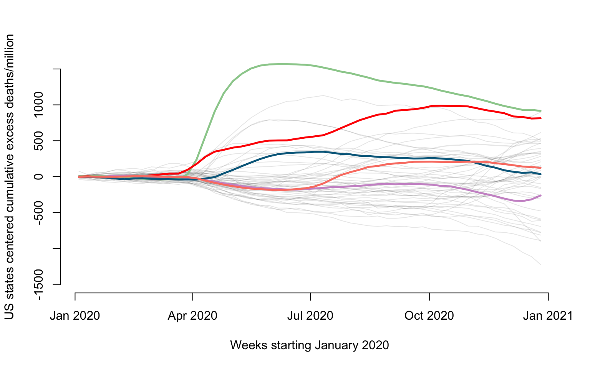
Calculate the SVD of \(W\), the corresponding eigenvalues, \(\lambda_k=d_k^2\), as well as the individual and cumulative proportion of variance explained.
SVDofW <- svd(W)
V <- SVDofW$v
lambda <- SVDofW$d ^ 2
propor_var <- round(100 * lambda / sum(lambda), digits = 1)
cumsum_var <- cumsum(propor_var)Display the first two right singular vectors
plot(current_date, V[,1], type = "l", lwd = 2.5,
col = "coral", cex = 1, xlab = xlabel, ylim = c(-0.35, 0.35),
ylab = "Right singular vectors", bty = "n")
lines(current_date, V[,2], lwd = 2.5, col = "coral4")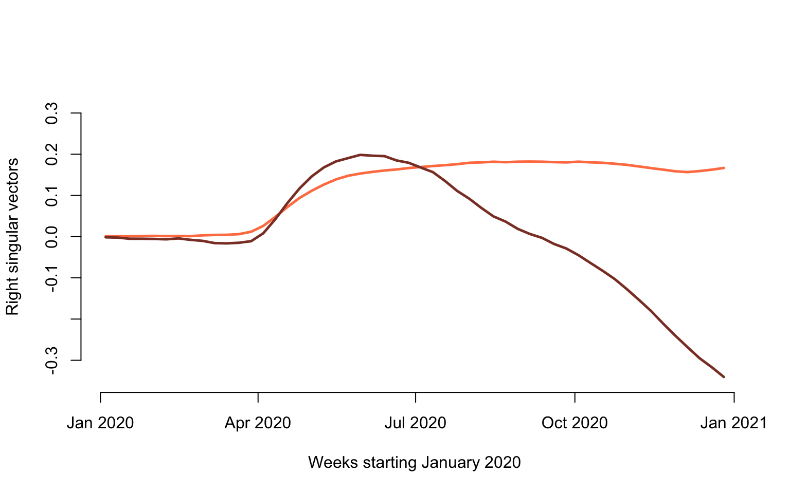
We will use a rank \(K_0=2\) reconstruction of the original data, which explains \(95.9\)% of the de-meaned data variability.
#Set the approximation rank
K0 <- 2
#Reconstruct the de-meaned data using the first K0 right singular vectors
rec <- SVDofW$u[,1:K0] %*% diag(SVDofW$d[1:K0]) %*% t(V[,1:K0])
#Add the mean to the rank K0 approximation of W
WK0 <- mW_mat+recylabel <- paste("US states cumulative excess deaths/million")
plot(current_date, Wr[emph_state_ind[1],], type = "l", lwd = 2.5,
col = col_emph[1], cex = 1, xlab = xlabel,
ylab = ylabel, ylim = c(-50, 2500), bty = "n")
lines(current_date, WK0[emph_state_ind[1],], lwd = 2.5, col = col_emph[1], lty = 2)
for(i in 2:length(emphasize)){
lines(current_date, Wr[emph_state_ind[i],], lwd = 2.5, col = col_emph[i])
lines(current_date, WK0[emph_state_ind[i],], lwd = 2.5, col = col_emph[i], lty = 2)
}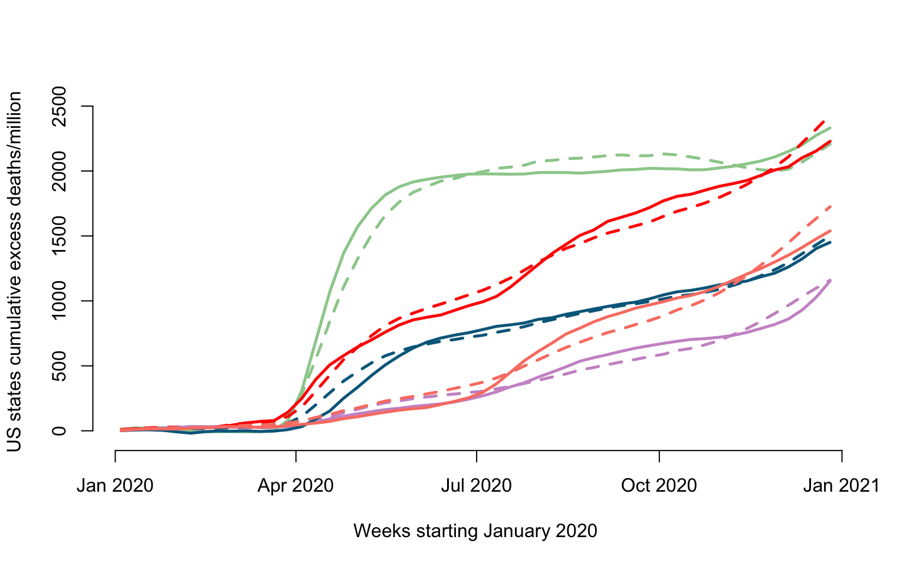
U <- SVDofW$u
plot(U[,1], U[,2], pch = 19, cex = 0.8,
xlab = "Scores on first right singular vector",
ylab = "Scores on second right singular vector", bty = "n")
points(U[emph_state_ind, 1], U[emph_state_ind, 2], col = col_emph, pch = 19, cex = 1.5)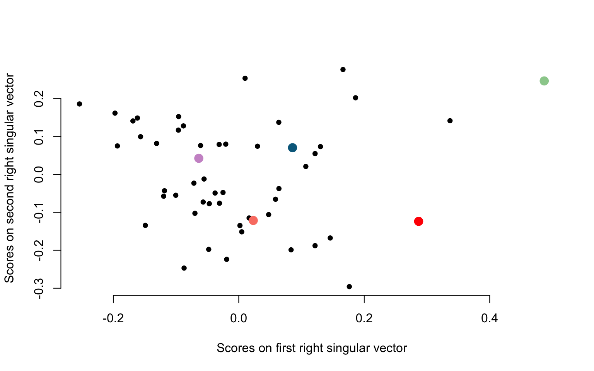
We now show how to do penalized spline smoothing on the NHANES data set. We provide two smoothing examples: scatter plot smoothing, and nonparametric regression with standard covariates and multiple predictors with smooth effects.
The code below shows how to create a figure demonstrating raw averages (black dots) and corresponding smooth averages of physical activity data at every minute of the day in the NHANES study.
library(mgcv)
library(ggplot2)
library(gridExtra)
#load data
nhanes_mortality <- readRDS("./../../FDA-with-R/NHANES/data/nhanes_fda_with_r.rds")
nhanes_plot <- nhanes_mortality %>% group_by(event) %>% summarise(n = n())
nhanes_plot <- nhanes_plot[which(!is.na(nhanes_plot$event)),]
MIMS_group <- c()
MIMS_day <- list()
for(i in 1:nrow(nhanes_plot)){
SEQN_group <- nhanes_mortality$SEQN[which(nhanes_mortality$event == nhanes_plot$event[i])]
MIMS_group <- rbind(MIMS_group,
colMeans(nhanes_mortality$MIMS[which(nhanes_mortality$SEQN %in% SEQN_group),],
na.rm = TRUE))
}
colnames(MIMS_group) <- 1:1440
nhanes_plot <- data.frame(nhanes_plot, MIMS_group)
#covert to long format to make the plot
nhanes_plot2 <- pivot_longer(nhanes_plot, cols = paste0("X",1:1440), names_to = "minute", values_to = "MIMS")
nhanes_plot2$minute <- as.numeric(str_sub(nhanes_plot2$minute, start = 2))
nhanes_plot2$event <- as.factor(nhanes_plot2$event)
#smooth raw average PA among deceased and alive group, respectively
MIMS_sm <- rep(NA, nrow(nhanes_plot2))
ind_alive <- which(nhanes_plot2$event == 0)
ind_deceased <- which(nhanes_plot2$event == 1)
MIMS_sm[ind_alive] <- gam(nhanes_plot2$MIMS[ind_alive] ~ s(nhanes_plot2$minute[ind_alive], bs = "cc"),
method = "REML")$fitted.values
MIMS_sm[ind_deceased] <- gam(nhanes_plot2$MIMS[ind_deceased] ~ s(nhanes_plot2$minute[ind_deceased], bs = "cc"),
method = "REML")$fitted.values
nhanes_plot2$MIMS_sm <- MIMS_sm
rm(MIMS_sm, ind_alive, ind_deceased)
#make a plot
ggplot() +
theme_classic() +
geom_point(data = nhanes_plot2, aes(x = minute, y = MIMS)) +
geom_line(data = nhanes_plot2, aes(x = minute, y = MIMS_sm, color = event), size = 1.5) +
scale_x_continuous(breaks = c(1,6,12,18,23)*60,
labels = c("01:00","06:00","12:00","18:00","23:00")) +
scale_y_continuous(breaks = c(4,8,12,16), limits = c(0, 16)) +
scale_color_manual(values = c("#FF6A6A", "#00BEFF")) +
guides(color="none") +
labs(x = "Time of Day", y = "MIMS") +
theme(plot.title = element_text(hjust = 0.5, face = "bold"))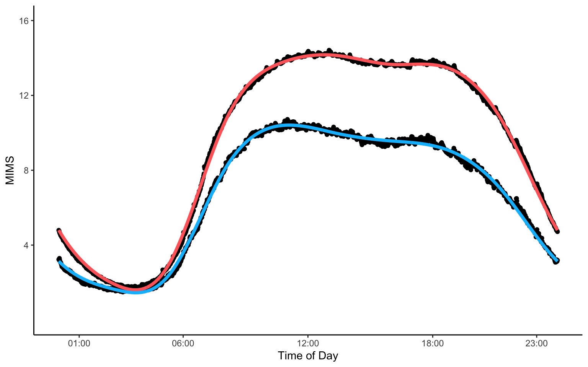
Consider now a slightly more complex model, where the outcome is the average MIMS for every study participant across all days and all minutes of the day. The predictors are age, BMI, gender, and poverty-income ratio (PIR), where the effect of age and BMI is allowed to vary smoothly. The code below shows how to create Figure 2.7 in the book.
library(mvtnorm)
nhanes_use <- nhanes_mortality %>%
filter(age > 18 & !is.na(age) & !is.na(BMI) & !is.na(gender) & !is.na(PIR))
nhanes_use$MIMS_mean <- nhanes_use$TMIMS/1440 # obtain average MIMS as the outcome
#fit a gam model
fit_mims <- gam(MIMS_mean ~ s(age, k = 51) + s(BMI, k = 51) + gender + PIR, data = nhanes_use)
plot_fit <- plot(fit_mims, select = 0)
#get qn for joint CI
ind_age <- which(str_detect(colnames(vcov(fit_mims)), "age")) # indices corresponding to age
ind_BMI <- which(str_detect(colnames(vcov(fit_mims)), "BMI"))
#obtain design matrix at specified locations of age and BMI
mat_design <- predict(fit_mims, newdata = data.frame(gender = nhanes_use$gender[1:length(seq(1, 100, 2))],
PIR = nhanes_use$PIR[1:length(seq(1, 100, 2))],
age = plot_fit[[1]]$x[seq(1, 100, 2)],
BMI = plot_fit[[2]]$x[seq(1, 100, 2)]),
type = "lpmatrix")
#obtain covariance matrices at selected locations
cov_age <- mat_design[,ind_age] %*% fit_mims$Vp[ind_age, ind_age] %*% t(mat_design[,ind_age]) # covariance matrix of age
cov_BMI <- mat_design[,ind_BMI] %*% fit_mims$Vp[ind_BMI, ind_BMI] %*% t(mat_design[,ind_BMI]) # covariance matrix of BMI
cov_use <- list(cov_age, cov_BMI)
alpha <- 0.05
qn <- rep(0, length(plot_fit))
#obtain quantiles
for(i in 1:length(qn)){
qn[i] <- qmvnorm(1 - alpha, corr = cov2cor(cov_use[[i]]), tail = "both.tails")$quantile
}
#make a plot
p1 <- ggplot() +
theme_classic() +
geom_point(data = nhanes_use, aes(x = age, y = MIMS_mean), alpha = 0.1, size = 0.5) +
labs(x = "Age (years)", y = "MIMS")
p2 <- ggplot() +
theme_classic() +
geom_point(data = nhanes_use, aes(x = BMI, y = MIMS_mean), alpha = 0.1, size = 0.5) +
labs(x = "BMI", y = "MIMS")
p3 <- ggplot() +
theme_classic() +
labs(x = "Age (years)", y = "f(age)") +
geom_polygon(aes(x = c(plot_fit[[1]]$x, rev(plot_fit[[1]]$x)),
y = c(plot_fit[[1]]$fit + plot_fit[[1]]$se/2*qn[1], rev(plot_fit[[1]]$fit - plot_fit[[1]]$se/2*qn[1]))),
fill = "gray20", alpha = 0.2) +
geom_polygon(aes(x = c(plot_fit[[1]]$x, rev(plot_fit[[1]]$x)),
y = c(plot_fit[[1]]$fit + plot_fit[[1]]$se, rev(plot_fit[[1]]$fit - plot_fit[[1]]$se))),
fill = "gray10", alpha = 0.4) +
geom_line(aes(x = plot_fit[[1]]$x, y = plot_fit[[1]]$fit), lty = 1) +
geom_hline(yintercept = 0, color = "lightgray", alpha = 0.7, lty = 2, lwd = 0.3)
p4 <- ggplot() +
theme_classic() +
labs(x = "BMI", y = "g(BMI)") +
geom_polygon(aes(x = c(plot_fit[[2]]$x, rev(plot_fit[[2]]$x)),
y = c(plot_fit[[2]]$fit + plot_fit[[2]]$se/2*qn[2], rev(plot_fit[[2]]$fit - plot_fit[[2]]$se/2*qn[2]))),
fill = "gray10", alpha = 0.2) +
geom_polygon(aes(x = c(plot_fit[[2]]$x, rev(plot_fit[[2]]$x)),
y = c(plot_fit[[2]]$fit + plot_fit[[2]]$se, rev(plot_fit[[2]]$fit - plot_fit[[2]]$se))),
fill = "gray20", alpha = 0.4) +
geom_line(aes(x = plot_fit[[2]]$x, y = plot_fit[[2]]$fit), lty = 1) +
geom_hline(yintercept = 0, color = "lightgray", alpha = 0.7, lty = 2, lwd = 0.3)
grid.arrange(p1, p2, p3, p4, nrow = 2)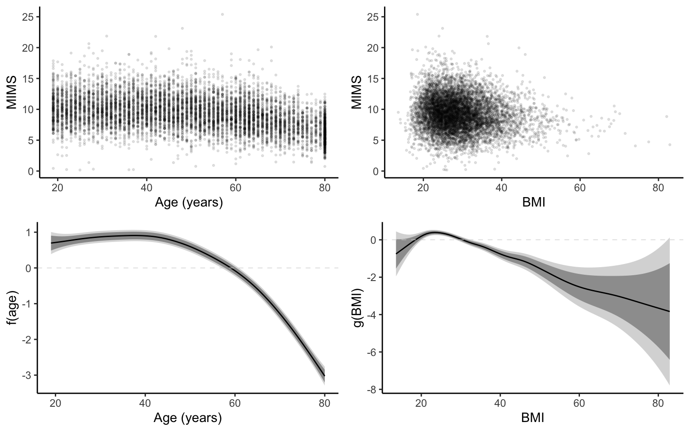
Singular value decomposition is a powerful method, but it essentially assumes that data are observed without error. Even when the truncated SVD is used as an approximation, this is done because the remaining variation is small, not because it is important or large. We are now investigating what happens when SVD is applied, incorrectly, to a data generating process that contains substantial noise.
Simulate samples of curves from the model \[y_{ij}=b_{1i}v_1(j)+b_{2i}v_2(j)+\epsilon_{ij}\;,\] for \(j=1,\ldots,p+1\) where \(\epsilon_{ij}\sim N(0,\sigma^2_\epsilon)\), \(b_{1i}\sim N(0,\sigma^2_1)\), and \(b_{2i}\sim N(0,\sigma^2_2)\). Here \(v_1=x_1/||x_1||\) and \(v_2=x_2/||x_2||\), where \(x_1(j)=1\) and \(x_2(j)=\frac{j-1}{p}-\frac{1}{2}\), for \(j=1,\ldots,p+1\). This ensures that \(v_1\) and \(v_2\) are orthonormal vectors. We use \(p=100\) and generate \(n=150\) samples with \(\sigma^2_1=4\) and \(\sigma^2_1=1\).
#setting error variance
sigma2eps <- 1
#setting the means of the random effects
mu <- c(0, 0)
#setting the correlation of random effects
rho <- 0
#setting the random effects variances
sigma11 <- 4
sigma22 <- 1
sigma12 <- rho * sqrt(sigma11 * sigma22)
#build the covariance matrix
Sigma <- matrix(c(sigma11, sigma12, sigma12, sigma22), ncol = 2)Simulate from the model
set.seed(5272021)
#grid size
p <- 100
#sample_size
n <- 150
#Define the v1, v2 vectors. They are orthonormal: the sum of squares of their entries = 1
v1 <- rep(1, p + 1)
v1 <- v1 / sqrt(sum(v1 ^ 2))
v2 <- (0:p) / p - 0.5
v2 <- v2 / sqrt(sum(v2 ^ 2))
#This is the matrix design
Z <- cbind(v1, v2)
#Simulate the random effects
b <- mvrnorm(n, mu, Sigma)
#Simulate errors
epsilon <- matrix(rnorm(n * (p + 1), 0, sqrt(sigma2eps)), ncol = n)
#Simulate data
Y <- Z %*% t(b) + epsilonApply SVD to the data matrix
Wr <- t(Y)
mW <- colMeans(Wr)
#Construct a matrix with the mean repeated on each row
mWmat <- matrix(rep(mW, each = nrow(Wr)), ncol = ncol(Wr))
#Center the data
W <- Wr-mWmat
#Calculate the SVD of W
SVDofW <- svd(W)
#Left singular vectors stored by columns
U <- SVDofW$u
#Singular values
d <- SVDofW$d
#Right singular vectors stored by columns
V <- SVDofW$vPlotting the data. This is used to illustrate how the generated data look like. In particular, it shows the effect of of noise on linear trends for each study participant.
#Plot the first study participant
plot(v2, Y[,1], type = "l", lwd = 2,
col = rgb(0, 0, 0, alpha = 0.1), bty = "n",
ylim = c(min(Y), max(Y)),
xlim = c(min(v2), max(v2)),
xlab = "Covariate", ylab = "Functional outcome")
#Add the data for the other study partcipants. They are all in gray
for(i in 2:dim(Y)[2]){
lines(v2, Y[,i], lwd = 1, col = rgb(0, 0, 0, alpha = 0.1))
}
#Two study participants are highlighted
lines(v2, Y[,1], lwd = 2, col = "cadetblue2")
lines(v2, Y[,100], lwd = 2, col = "salmon")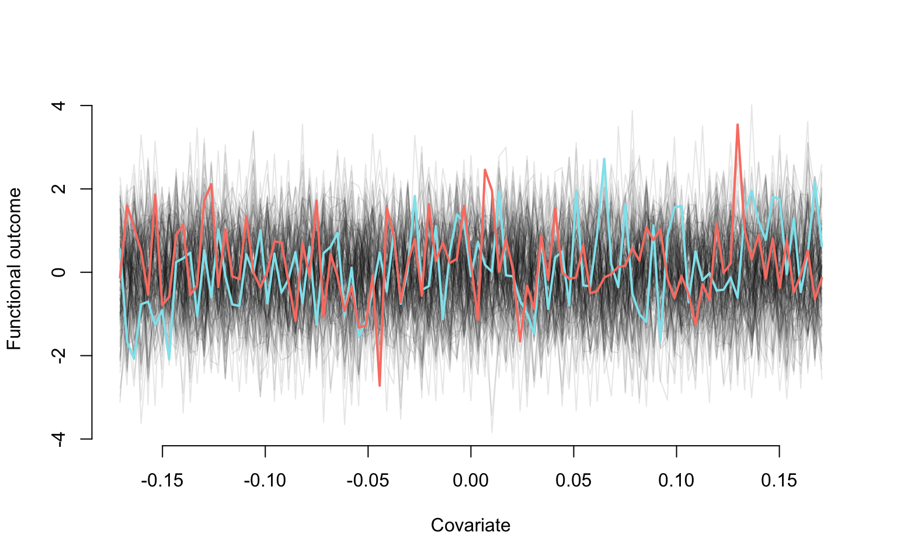
Plotting the true and estimated eigenfunctions
plot(v2, v1, type = "l", lwd = 4, bty = "n",
ylim = c(min(-V[,1:2]), max(-V[,1:2])), xlab = "Covariate", ylab = "Right singular vectors", col = "cadetblue4")
lines(v2, v2, lwd = 4, col = "cadetblue2")
lines(v2, -V[,1], lwd = 2, col = "coral")
lines(v2, -V[,2], lwd = 2, col = "coral4")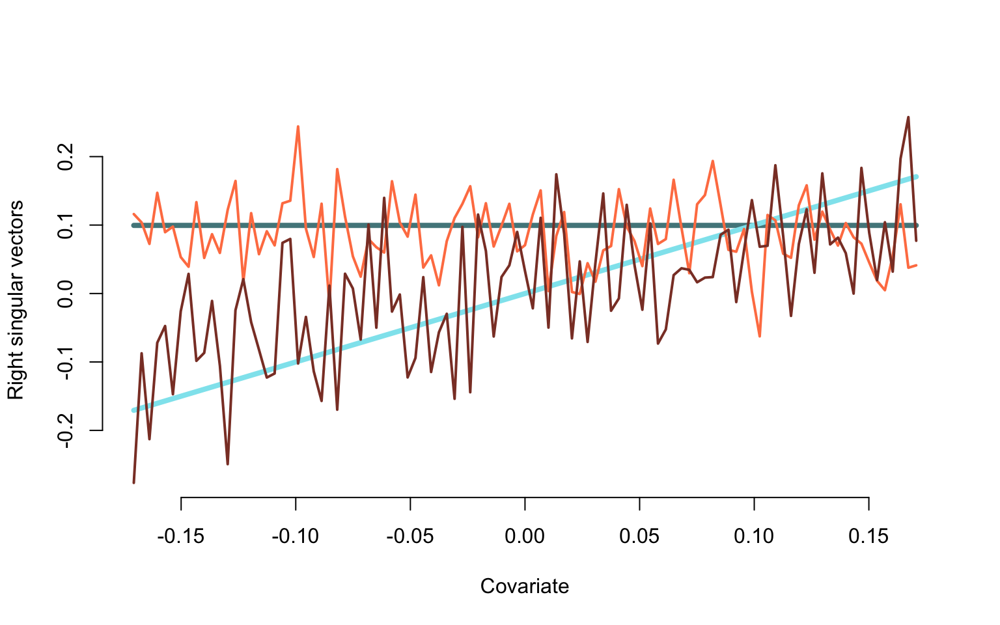
Scaled eigenvalues
round(d[1:5] ^ 2 / n, digits = 3)
## [1] 5.296 3.312 3.071 2.931 2.895Plot the percent variance explained by each estimated right eigenvector
plot(d ^ 2 / sum(d ^ 2), bty = "n",
type = "p", pch = 19, cex = 0.8,
xlab = "Right singular vector number",
ylab = "Percent variance explained")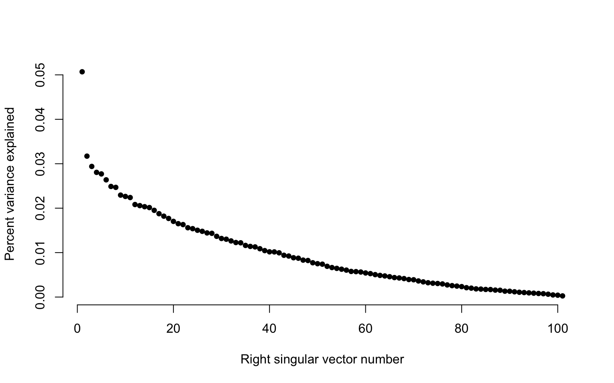
We now illustrate covariance smoothing for dense functional data using the NHANES accelerometry data. The code below creates the estimated raw covariance and smooth covariance functions.
library(fields)
#do FPCA on the data to obtain eigenfunctions and eigenvalues
MIMS <- unclass(nhanes_use$MIMS[, seq(10, 1440, 10)])
fit_fpca_0.01 <- fpca.face(Y = MIMS, lambda = 0.01)
fit_fpca_1 <- fpca.face(Y = MIMS, lambda = 1)
fit_fpca_100 <- fpca.face(Y = MIMS, lambda = 100)
#calculate smoothed covariance
cov_unsmoothed <- cov(MIMS, use = "pairwise.complete.obs")
cov_smoothed_0.01 <- tcrossprod(fit_fpca_0.01$efunctions %*% diag(sqrt(fit_fpca_0.01$evalues)))
cov_smoothed_1 <- tcrossprod(fit_fpca_1$efunctions %*% diag(sqrt(fit_fpca_1$evalues)))
cov_smoothed_100 <- tcrossprod(fit_fpca_100$efunctions %*% diag(sqrt(fit_fpca_100$evalues)))
#make a plot
par(mfrow = c(2, 2), mgp=c(2.4,1,0), mar = c(3.5, 4, 3, 3), oma = c(0.5, 0.5, 0, 0))
image.plot(cov_unsmoothed, axes = F,
# xlab = "Time of day", ylab = "Time of day",
main = "Unsmoothed", zlim = c(-12, 72), legend.mar = 6)
axis(1, at = c(1, 6, 12, 18, 23)/24, labels = c("01:00", "06:00", "12:00", "18:00", "23:00"))
axis(2, at = c(1, 6, 12, 18, 23)/24, labels = c("01:00", "06:00", "12:00", "18:00", "23:00"))
image.plot(cov_smoothed_0.01, axes = F,
# xlab = "Time of day", ylab = "Time of day",
main = bquote(bold("Smoothed (" ~ lambda ~ "= 0.01)" )),
zlim = c(-12, 72), legend.mar = 6)
axis(1, at = c(1, 6, 12, 18, 23)/24, labels = c("01:00", "06:00", "12:00", "18:00", "23:00"))
axis(2, at = c(1, 6, 12, 18, 23)/24, labels = c("01:00", "06:00", "12:00", "18:00", "23:00"))
image.plot(cov_smoothed_1, axes = F,
# xlab = "Time of day", ylab = "Time of day",
main = bquote(bold("Smoothed (" ~ lambda ~ "= 1)" )),
zlim = c(-12, 72), legend.mar = 6)
axis(1, at = c(1, 6, 12, 18, 23)/24, labels = c("01:00", "06:00", "12:00", "18:00", "23:00"))
axis(2, at = c(1, 6, 12, 18, 23)/24, labels = c("01:00", "06:00", "12:00", "18:00", "23:00"))
image.plot(cov_smoothed_100, axes = F,
# xlab = "Time of day", ylab = "Time of day",
main = bquote(bold("Smoothed (" ~ lambda ~ "= 100)" )),
zlim = c(-12, 72), legend.mar = 6)
axis(1, at = c(1, 6, 12, 18, 23)/24, labels = c("01:00", "06:00", "12:00", "18:00", "23:00"))
axis(2, at = c(1, 6, 12, 18, 23)/24, labels = c("01:00", "06:00", "12:00", "18:00", "23:00"))
mtext("Time of day", side = 1, line = -1, outer = TRUE)
mtext("Time of day", side = 2, line = -1, outer = TRUE)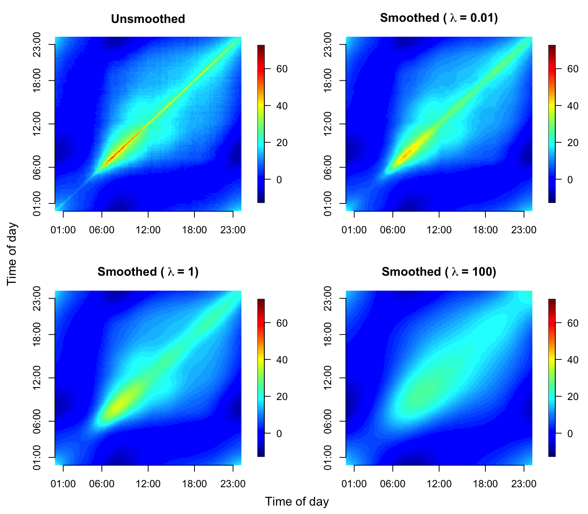
Similarly, the code below shows how to calculate smoothed correlation functions and reproduce Figure 2.12 in the book.
#calculate smoothed correlation
cor_unsmoothed <- cor(MIMS, use = "pairwise.complete.obs")
cor_smoothed_0.01 <- cov2cor(cov_smoothed_0.01)
cor_smoothed_1 <- cov2cor(cov_smoothed_1)
cor_smoothed_100 <- cov2cor(cov_smoothed_100)
#make a plot
par(mfrow = c(2, 2), mgp=c(2.4,1,0), mar = c(3.5, 4, 3, 3), oma = c(0.5, 0.5, 0, 0))
image.plot(cor_unsmoothed, axes = F,
# xlab = "Time of day", ylab = "Time of day",
main = "Unsmoothed", zlim = c(-1, 1), legend.mar = 6)
axis(1, at = c(1, 6, 12, 18, 23)/24, labels = c("01:00", "06:00", "12:00", "18:00", "23:00"))
axis(2, at = c(1, 6, 12, 18, 23)/24, labels = c("01:00", "06:00", "12:00", "18:00", "23:00"))
image.plot(cor_smoothed_0.01, axes = F,
# xlab = "Time of day", ylab = "Time of day",
main = bquote(bold("Smoothed (" ~ lambda ~ "= 0.01)" )), zlim = c(-1, 1), legend.mar = 6)
axis(1, at = c(1, 6, 12, 18, 23)/24, labels = c("01:00", "06:00", "12:00", "18:00", "23:00"))
axis(2, at = c(1, 6, 12, 18, 23)/24, labels = c("01:00", "06:00", "12:00", "18:00", "23:00"))
image.plot(cor_smoothed_1, axes = F,
# xlab = "Time of day", ylab = "Time of day",
main = bquote(bold("Smoothed (" ~ lambda ~ "= 1)" )), zlim = c(-1, 1), legend.mar = 6)
axis(1, at = c(1, 6, 12, 18, 23)/24, labels = c("01:00", "06:00", "12:00", "18:00", "23:00"))
axis(2, at = c(1, 6, 12, 18, 23)/24, labels = c("01:00", "06:00", "12:00", "18:00", "23:00"))
image.plot(cor_smoothed_100, axes = F,
# xlab = "Time of day", ylab = "Time of day",
main = bquote(bold("Smoothed (" ~ lambda ~ "= 100)" )), zlim = c(-1, 1), legend.mar = 6)
axis(1, at = c(1, 6, 12, 18, 23)/24, labels = c("01:00", "06:00", "12:00", "18:00", "23:00"))
axis(2, at = c(1, 6, 12, 18, 23)/24, labels = c("01:00", "06:00", "12:00", "18:00", "23:00"))
mtext("Time of day", side = 1, line = -1, outer = TRUE)
mtext("Time of day", side = 2, line = -1, outer = TRUE)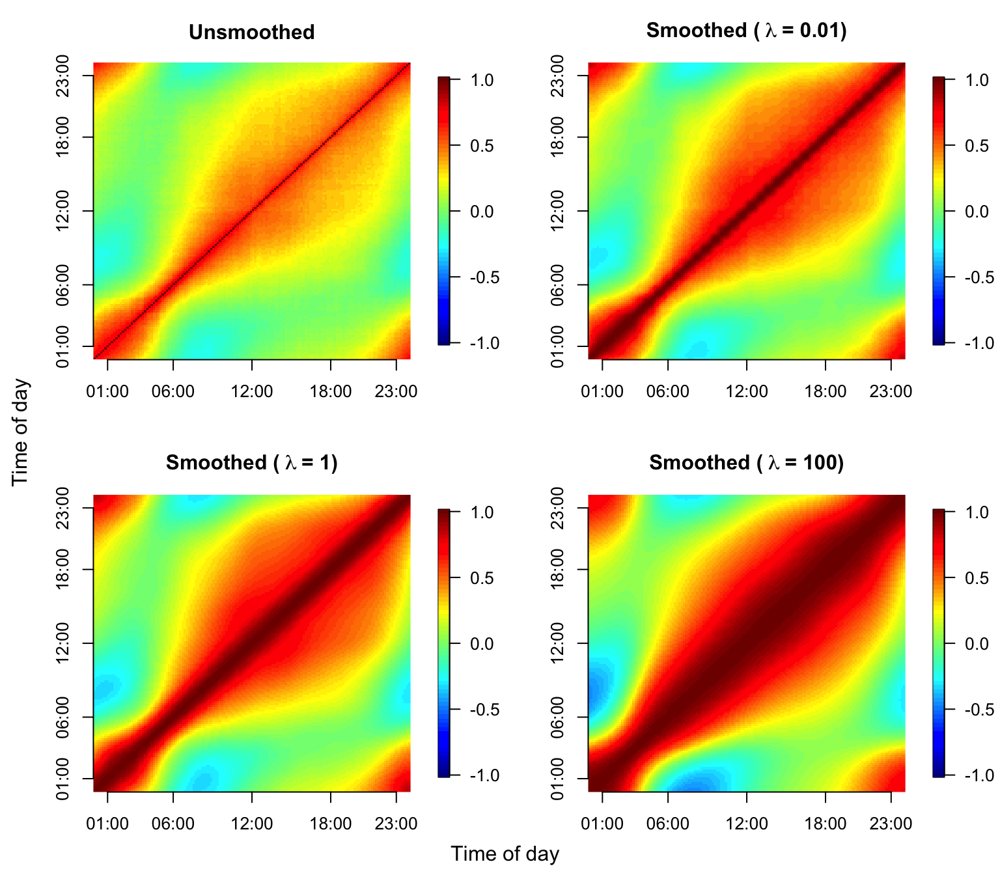
This document shows how to visualize the CD4 counts data, its raw and smooth covariance operators.
library(refund)
library(face)
library(fields)#Load the data
data(cd4)
n <- nrow(cd4)
T <- ncol(cd4)
#Construct a vectorized form of the data
id <- rep(1:n, each = T)
t <- rep(-18:42, times = n)
y <- as.vector(t(cd4))
#Indicator for NA observations. This takes advantage of the sparse nature of the data
sel <- which(is.na(y))
#Organize data as outcome, time, subject ID
data <- data.frame(y = log(y[-sel]), argvals = t[-sel],
subj <- id[-sel])
data <- data[data$y > 4.5,]
#Provide the structure of the transformed data
head(data)
## y argvals subj....id..sel.
## 1 6.306275 -9 1
## 2 6.794587 -3 1
## 3 6.487684 3 1
## 4 6.622736 -3 2
## 5 6.129050 3 2
## 6 5.198497 9 2Apply the function from the package. This function uses penalized splines smothing to estimate the covariance and correlation and produce predictions.
#Fit FACEs to the CD4 counts data
fit_face <- face.sparse(data, argvals.new = (-20:40))
data.h <- data
tnew <- fit_face$argvals.new#Estimated covariance
Cov <- fit_face$Chat.new
#Estimated variance
Cov_diag <- diag(Cov)
#Estimated correlation
Cor <- fit_face$Cor.newPlot the covariance as a function of time.
Xlab <- "Months since seroconversion"
Ylab <- "log (CD4 count)"
#Plot the smooth variance estimate
par(mfrow = c(1, 1), mar = c(4.5, 4.5, 3, 2))
plot(tnew, Cov_diag, type="l", xlab = Xlab, ylab = "",
main = "CD4: variance function", cex.axis = 1.25,
cex.lab = 1.25, cex.main = 1.25, lwd = 2)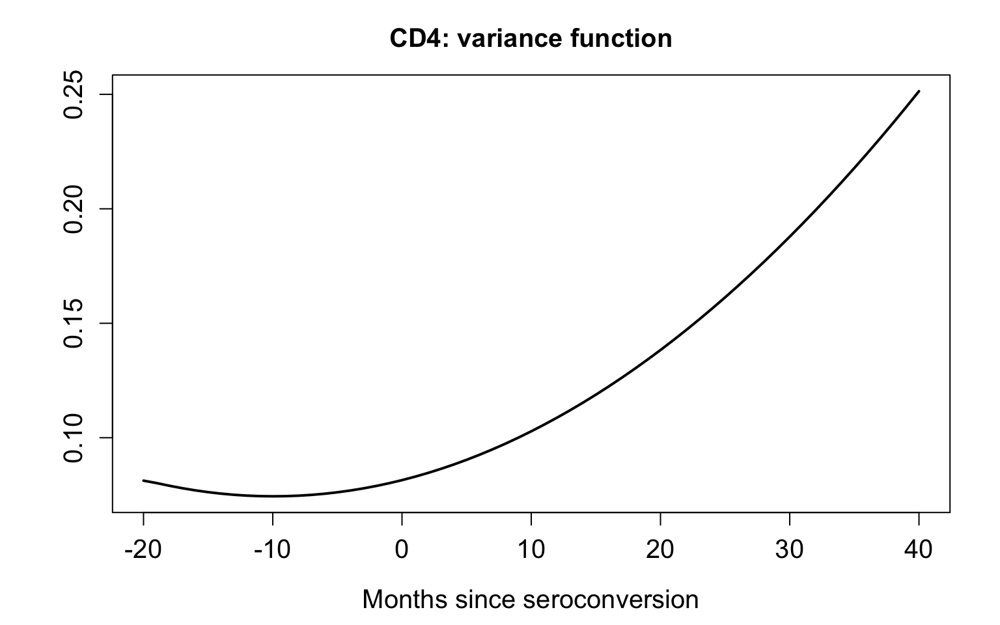
How does one plot the raw covariance and correlation? We build a matrix of submatrices, each corresponding to one study participant. Each row of the submatrix corresponding to a study participant, \(i\), contains (\(j_i\), \(k_i\),\(r_i r_j\)), \(j_i,k_i=1,\ldots,p_i\) and \(r_i r_j\) is the product of these residuals.
#First calculate the matrix of residuals
tcd4 <- log(cd4)
tcd4[tcd4 <= 4.5] <- NA
#Compute the matrix wih the estimated mean on each row
mtcd4 <- matrix(rep(fit_face$mu.new, nrow(tcd4)), ncol = ncol(tcd4), byrow = TRUE)
#Calculate the centered residuals
res_cd4 <- (tcd4 - mtcd4) #Build the pair-wise residual products
#Build the matrix of residuals
for(i in 1:dim(res_cd4)[1]){
td <- res_cd4[i,]
tt <- which(!is.na(td))
wo <- td[tt]
tmat <- matrix(rep(NA, 3 * length(tt) ^ 2), ncol = 3)
tmat[,1] <- c(kronecker(wo, t(wo)))
tmat[,2] <- rep(tt, each = length(tt)) - 19
tmat[,3] <- rep(tt, length(tt)) - 19
if(i==1){
pmat <- tmat
}else{
pmat <- rbind(pmat, tmat)
}
}Plot the products of residuals
#Find the quantiles of the products of residuals
col_pal <- viridis(125)
qcol <- c(quantile(abs(pmat[,1]), probs = seq(0.01, 0.75, length = length(col_pal) - 1)), 1)
ind_col <- rep(NA, dim(pmat)[1])
#Assign the color palette to quantiles
for(i in 1:dim(pmat)[1]){
ii_col <- which.min(abs(pmat[i, 1]) - qcol > 0)
ind_col[i] <- col_pal[ii_col]
}
qcol <- format(round(qcol, 2), nsmall = 2)
par(mar = c(4.1, 4.1, 4.1, 6.1), xpd = TRUE)
#The seed is set here for jittering the data
set.seed(632021)
plot(jitter(pmat[,2], 3), jitter(pmat[,3], 3), pch = 19, col = ind_col, cex = 0.15,
xlab = Xlab, ylab = Xlab)
legend("right", inset = c(-0.3, 0), legend = c(qcol[124], qcol[95], qcol[70], qcol[50], qcol[1]),
pch = c(19, 19), col = c(col_pal[125], col_pal[95], col_pal[70], col_pal[50], col_pal[1]),
pt.cex = rep(0.75, 5), cex = rep(0.75, 5), bty = "n")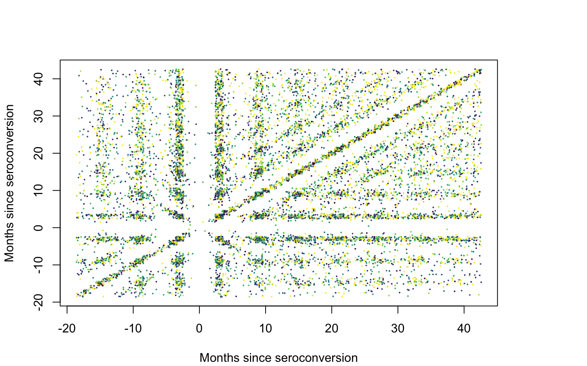
id <- data.h$subj
uid <-unique(id)
#Plot the smooth covariance function
brk <- c(0.03, quantile(as.vector(Cov), probs = seq(0.01, 0.99, length = 127)), 0.26)
par(mfrow = c(1, 1), mar = c(4.5, 4.5, 2, 3))
image.plot(tnew, tnew, Cov, xlab = Xlab, ylab = Xlab,
col = viridis(128), breaks = brk,
axis.args = list(at = c(0.05, 0.1, 0.15, 0.2, 0.25)),
legend.shrink = 0.75, legend.line = -1.5, legend.width = 0.5)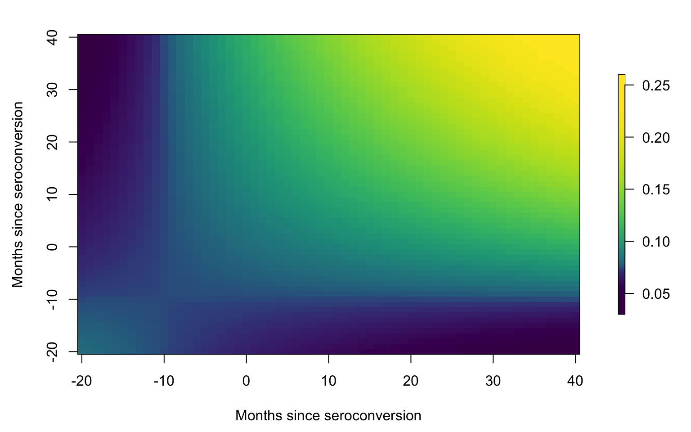
id <- data.h$subj
uid <- unique(id)
#Plot the smooth correlation function
brk <- c(0.2, seq(0.21, 0.9, length = 69), seq(0.91, 0.99, length = 58), 1.001)
par(mfrow = c(1, 1), mar = c(4.5, 4.5, 2, 3))
image.plot(tnew, tnew, Cor, xlab = Xlab, ylab = Xlab,
col = viridis(128), breaks = brk,
axis.args = list(at = c(0.2, 0.4, 0.6, 0.8, 1)),
legend.shrink = 0.75, legend.line = -1.5, legend.width = 0.5)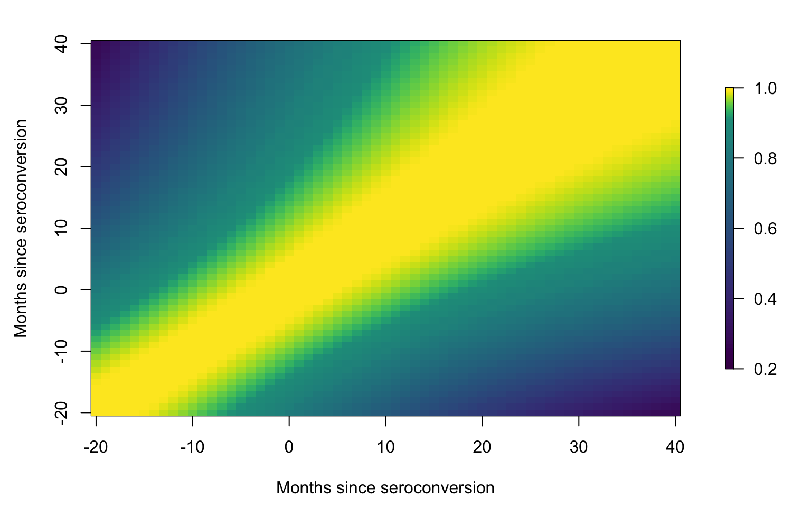